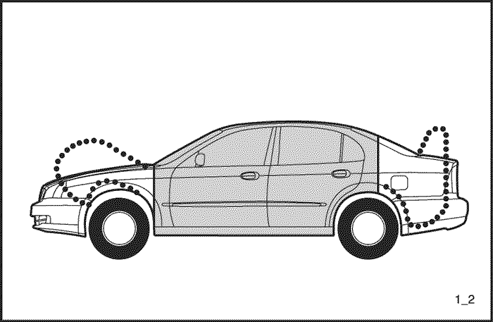

INFORMACIÓN GENERAL
INSTRUCCIONES GENERALES
Esta publicación está diseñada para ayudar al técnico de reparación de la carrocería en su trabajo especializado. En los últimos años el trabajo en la carrocería de los vehículos ha cambiado bastante. A medida que los vehículos han evolucionado técnicamente, el trabajo en la carrocería también lo ha hecho para adaptarse a nuevos requisitos de diseños, cambios para reconciliar exigencias aparentemente en conflicto, como por ejemplo:
- resistencia y seguridad ; bajo peso
- espacio ; buena aerodinámica
- alta calidad ; precio bajo
La durabilidad y facilidad de la reparación en la carrocería es también un aspecto importante.
Hoy en día, el uso de equipos de producción altamente automatizados hace posible mantener las tolerancias más estrictas y con ello asegurar un alto nivel de calidad.
Cuando se daña la carrocería, el cliente espera, en justa medida que se le repare de forma fiable y cumpliendo los mismos estándar de calidad.
Al mismo tiempo, para su seguridad, el cliente espera que disponga de un amplio conocimientos sobre materiales, métodos de medición y rectificación, posibles distorsiones, prevención óptima de la corrosión y otros muchos aspectos relacionados.
Esta publicación tiene como objeto ayudarle a actualizar sus conocimientos y ofrecerle una idea de qué necesita rectificar en casos de daños moderados o graves por accidente, por su propia seguridad y para satisfacción de sus clientes.
AVISO DE SEGURIDAD IMPORTANTE
ANTES DE COMENZAR A TRABAJAR
- Desconecte la batería para reducir la posibilidad de incendio debido a un corto circuito.
- Compruebe la existencia de posibles fugas de combustible y repárelas si fuera necesario.
- Retire el depósito de combustible y/o las líneas de combustible en caso de tener que utilizar el equipo de soldadura cerca del sistema de combustible.
- Antes de soldar, lijar o cortar, proteja las alfombras y asientos con cubiertas ignífugas.
- Siga las prácticas normales de seguridad al utilizar líquidos tóxicos o inflamables.
- Utilice el equipo estándar de seguridad al pintar mediante pulverización, soldar, cortar, lijar o amolar. Entre los equipos estándar de seguridad se incluye.
- Respirador y máscaras con filtro: Diseñadas para filtrar vapores, neblina, polvo u otras partículas tóxicas en suspensión. Use un respirador o máscara con filtro diseñada para protegerle de los peligros del trabajo específico que realice; algunos respiradores, por ejemplo, están diseñados para filtrar únicamente polvo y partículas en suspensión, pero no así vapores tóxicos.
- Gafas de seguridad: Diseñadas para proteger los ojos de elementos proyectados, partículas de polvos o salpicaduras de líquidos.
- Guantes: Guantes de goma que protegen frente a los productos químicos corrosivos. Los guantes de soldador que protegen frente a las quemaduras y abrasiones provocadas por la soldadura, lijado o amolado.
- Calzado de seguridad: Las suelas anti deslizantes le protegen contra posibles resbalones. Las punteras metálicas protegen contra la caída de objetos.
- Tapones para los oídos: Protegen el tímpano contra niveles peligrosos de ruidos.
DURANTE EL TRABAJO
- No fume mientras trabaje cerca del sistema de combustible.
- Coloque los trapos llenos de gasolina o empapados en disolvente en un contenedor adecuado.
- No utilice una manguera de aire para limpiar los conjuntos de frenos: emplee únicamente una aspiradora autorizada y utilice una máscara con filtro o respirador autorizado.
- Cuando utilice un martinete hidráulico o una mesa de enderezado de bastidor, coloque siempre un cable de seguridad: no permanezca en línea directa con las cadenas usadas con tales equipos.
SEGURIDAD DE LA CARROCERÍA
Las modernas carrocerías con exterior en tensión están diseñadas de forma que dispongan de una robusta célula para pasajeros protegida por unas zonas de contracción delantera y trasera.
- En caso de accidente, las zonas de contracción están diseñadas para convertir la energía del impacto en trabajo de deformación.
- La forma, el material y el grosor del metal deben estar totalmente calculados.


- Muchos años de experiencia, refinados métodos de cálculo informático y una serie de costosas pruebas de colisión hacen posible que GM DAEWOO construya en la actualidad carrocerías que ofrecen un comportamiento excelente en las zonas de contracción durante colisiones frontales o traseras.

Cuando se reparan daños en la carrocería, por ello es absolutamente necesario restaurar la estructura y resistencia originales para así garantizar la seguridad de los ocupantes.
CARGAS Y PARTES DE LA CARROCERÍA
- El método anterior de realizar una distinción entre partes con soporte de carga y otras sin ella en vehículos con chasis y carrocería ya no tiene sentido hacerla. Todas las piezas, incluidas las ventanas contribuyen a la solidez total del vehículo.
Por ello, con las modernas carrocerías de GM DAEWOO, se habla de piezas de gran tensión y pieza con menor tensión.
UTILIZACIÓN DE MATERIALES NUEVOS DE ALTA CALIDAD
- El requisito de lograr un peso reducido de la carrocería ha llevado a la reducción en la cantidad de acero empleado, por ejemplo mediante el uso de láminas de acero de menor grosor. Este aspecto se ha logrado con los ACEROS LAMINADOS DE ALTA RESISTENCIA, a pesar de que al mismo tiempo se tuviera la necesidad de lograr resultados mayor resistencia por parte de la propia carrocería. Los aceros de alta resistencia disponen de una resistencia a la tensión y un límite de elasticidad superior en un 30% al del acero convencional. Estas propiedades no deben destruirse al llevar a cabo las reparaciones, por ejemplo empleando un calor excesivo.
Protección anticorrosión
- La durabilidad del trabajo en la carrocería, su seguridad a largo plazo asociada y la retención del valor dependen en gran parte de la protección anticorrosión aplicada a la plancha de metal. En GM DAEWOO se presta un especial cuidado en la producción.
- Por ello, esta protección anticorrosión debe preservarse o restaurarse cuando se lleven a cabo reparaciones.
RESUMEN
- Todos los vehículos GM DAEWOO están fabricados cumpliendo los mayores niveles en cuestión de estilo y propiedades del material.
- Estos elevados niveles de calidad deben mantenerse cuando se realicen reparaciones debidas a un accidente.
- Los errores al realizar las operaciones de reparación como por ejemplo enderezado, soldadura de planchas metálicas, etc no sólo producen defectos visibles, si no que además afectan a la seguridad del vehículo.
- Los errores cometidos al restaurar la protección anticorrosión afectan a la durabilidad.
REPARACIÓN DE LA PLACA DE ACERO TRATADA CON ZINC
La plancha de acero zincado usada en algunos paneles del modelo NUBIRA/LACETTI requiere técnicas de reparación diferentes a las planchas de acero normales.

- Antes de realizar la soldadura por puntos en la plancha de acero zincado, elimine la pintura de ambos lados de la brida que se pretende soldar. Aplique sellador a la brida tras su soldadura.
Precaución: Para evitar lesiones en los ojos, utilice guantes de seguridad siempre que lije, corte o amole.
Nota: Selle totalmente las superficies lijadas para evitar la oxidación.
- Las propiedades de continuidad eléctricas de la plancha de acero zincado son diferentes de las de las planchas de acero normales. Cuando se realiza la soldadura por puntos, aumente la corriente en un 10-20%, o aumente el tiempo de soldadura de resistencia.
- Aumente también el número de puntos de soldadura en un 10-20%.
Nota: Los procedimientos de soldadura MIG para las planchas de acero zincado son los mismos que para las planchas de acero normales.
Precaución: Para evitar lesiones en los ojos y quemaduras al soldar, utilice un casco de soldador adecuado, guantes y calzado de seguridad.
- Antes de aplicar masilla o relleno para carrocerías a la plancha de acero zincado, lije el recubrimiento de zinc para mejorar la adherencia y evitar el astillamiento.
Nota: Emplee únicamente masillas y rellenos con base epóxica sobre la plancha de acero zincado.
ILUSTRACIÓN TÉCNICA
CARROCERÍA DE TRES CUERPOS
PORTÓN TRASERO
VAGONETA DE ESTACIÓN
PROCEDIMIENTOS DE REPARACIÓN DE LA CARROCERÍA
| Nº | Operación | Procedimiento | Observaciones |
| 1 | Inspección | Inspeccione las piezas dañadas y la extensión de dicho daño para planificar la reparación. | . |
| 2 | Preparación | Prepare las piezas nuevas, herramientas especiales de reparación y otros elementos necesarios. | . |
| 3 | Desinstalar | Retire las piezas relacionadas para su reparación. | . |
| 4 | Extraer | Extraiga completamente y enderece las zonas dañadas. | . |
| 5 | Cortar y levantar | Cortar las zonas dañadas y taladrar en los nudos de la soldadura por puntos, extrayendo el resto de las bridas de soldadura por puntos. | . |
| 6 | Pelar | Pele la capa interior y el sellador. | . |
| 7 | Moldear | Moldee las zonas dañadas y alise las bridas de soldadura, rellenando cualquier hueco. | . |
| 8 | Colocar las piezas nuevas | Amole ambos lados de la sección de soldadura y coloque las piezas nuevas y las soldaduras de puntos para una instalación temporal. | . |
| 9 | Inspección | Controle la posición correcta de las dimensiones y preinstale las piezas exteriores, comprobando las distancias de seguridad y las diferencias de nivel. | . |
| 10 | Soldadura | Realice una soldadura de prueba y la soldadura principal. | . |
| 11 | Acabado | Acabe las zonas de soldadura y alise las bridas para conseguir un ajuste perfecto. | . |
| 12 | Sellado | Aplique sellador a las superficies de contacto y solapamiento. | . |
| 13 | Revestimiento inferior | Aplique el revestimiento inferior a las zonas que lo requieran. | . |
| 14 | Pintura | Aplique la pintura. | . |
| 15 | Atenuador | Aplique el atenuador a las zonas señaladas. | . |
| 16 | Agentes anticorrosivos | Aplique una capa de agentes anticorrosivos a las zonas marcadas. | . |
| 17 | Instalación | Instale las piezas relacionadas y frote con grasa las piezas móviles, llenando el líquido refrigerante, aceite, el gas del aire acondicionado y otros. | . |
| 18 | Comprobar y ajustar | Compruebe todas las operaciones, alineaciones de ruedas, fugas, luces y otros elementos con la hoja de comprobación especificada. | . |